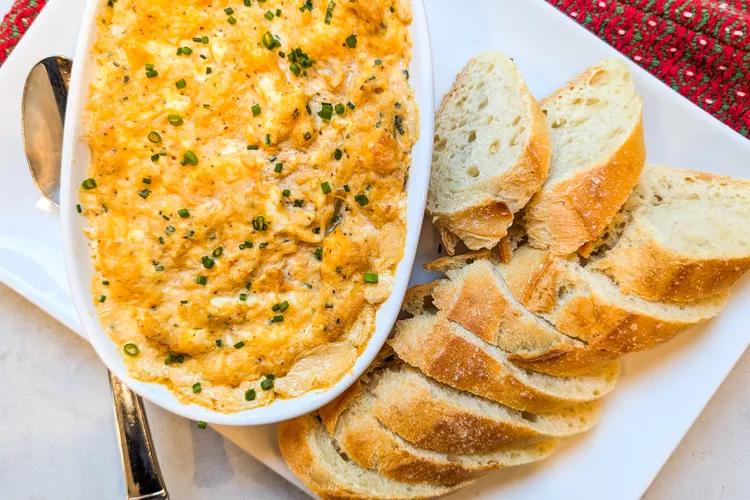

Hot Crab Dip

Description
I like this creamy crab dip because it feels special and isn't something that I would make regularly (even though you could because it's very easy). Even canned crab can be fairly expensive per ounce, so I like to save this recipe for special occasions. When the dip comes out of the oven, bubbling hot and smelling delicious, your hungry guests will want to dive in immediately.
Because this dip involves mixing crab with cream cheese and seasonings, there's no need to use fresh crab for this recipe. Canned crab meat works just fine, but I do prefer lump crab meat over minced.
Most importantly, when you open your can of crab meat, be sure to drain the meat well before adding it to the dip. Press out the liquid so the meat looks on the dry side. This will ensure that your dip isn't too watery.
Ingredients
- Nonstick cooking spray or softened butter
- 8 Ounces cream cheese, softened
- 1 (6-ounce) can lump crab meat, drained well
- 1 Tablespoon minced chives, plus garnish
- 2 teaspoons Old Bay seasoning
- 1 teaspoon Worcestershire sauce
- 1 teaspoon lemon juice
- 1 clove garlic, grated or minced
- Toasted baguette or crackers, for serving
Preparation
- Preheat the oven to 400 °F.
- Grease a 2-cup ramekin or baking dish with the cooking spray or butter.
- In a medium bowl, combine the rest of the ingredients (minus the baguette). Mix together and taste. Add more seasoning if needed.
- Transfer to the greased baking dish. Place on a baking sheet in case it overflows.
- Bake until it is bubbling and completely melted and a crust develops on top. 20 to 25 minutes.
- Serve and garnish with the chives.
- You can mix ahead of time and bake off before serving. Or reheat in the oven for 10-15 minutes after refrigerating.
Original recipe by Nick Evans at SimplyRecipes.com